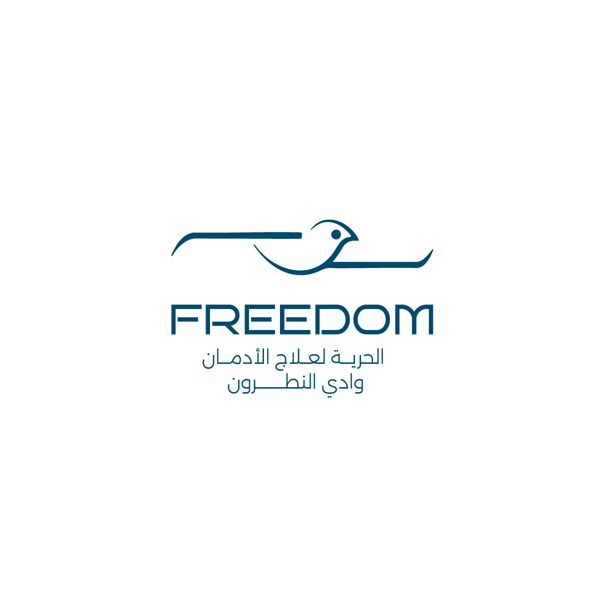
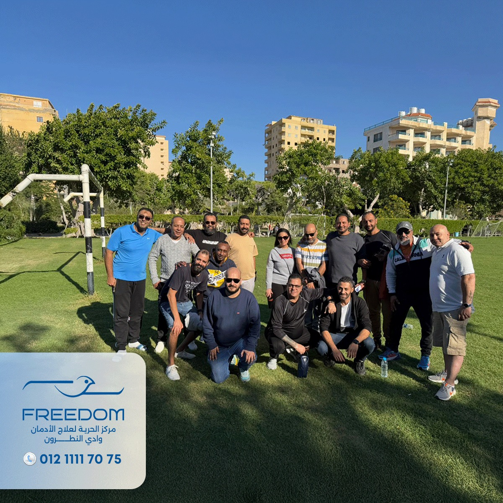
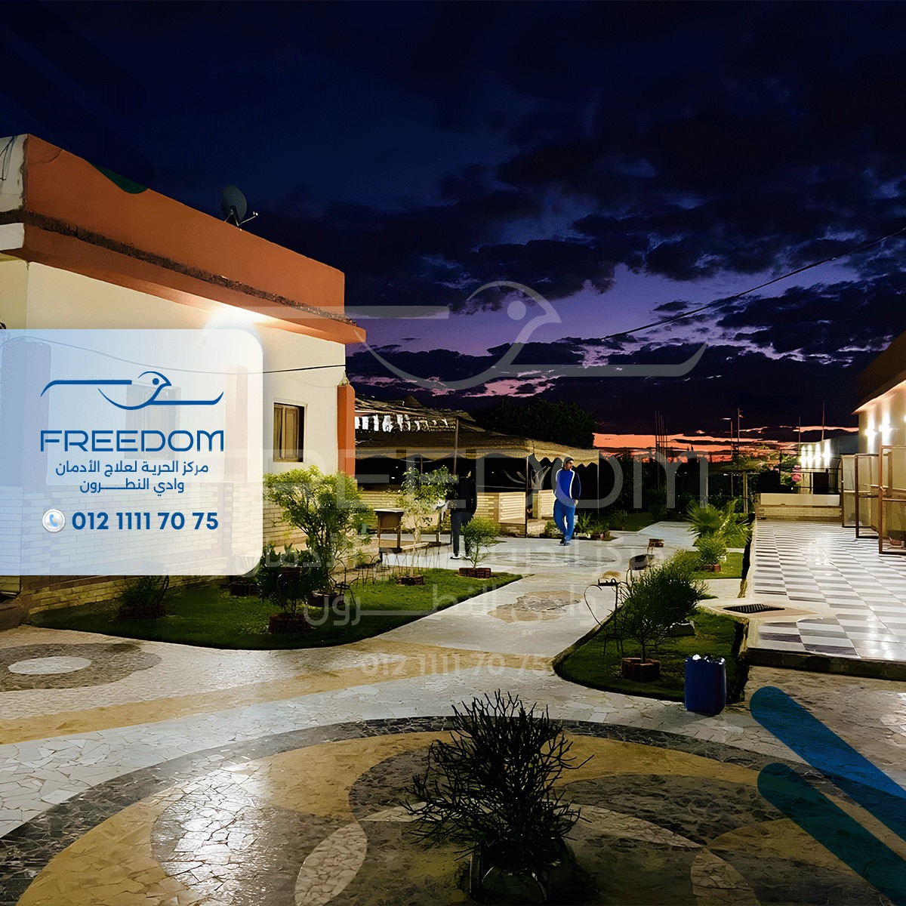
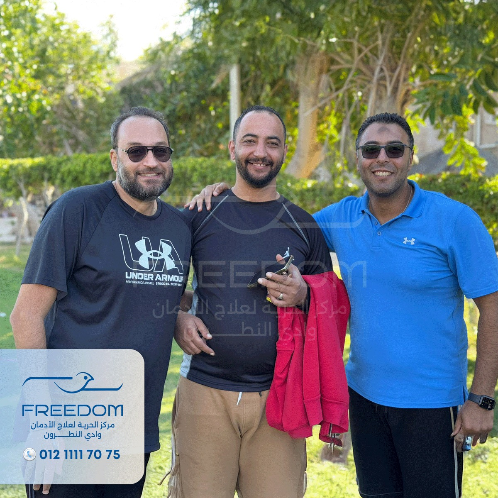
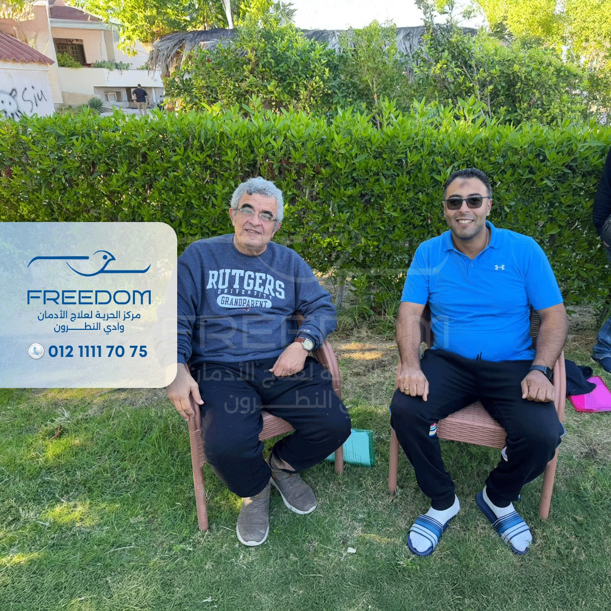
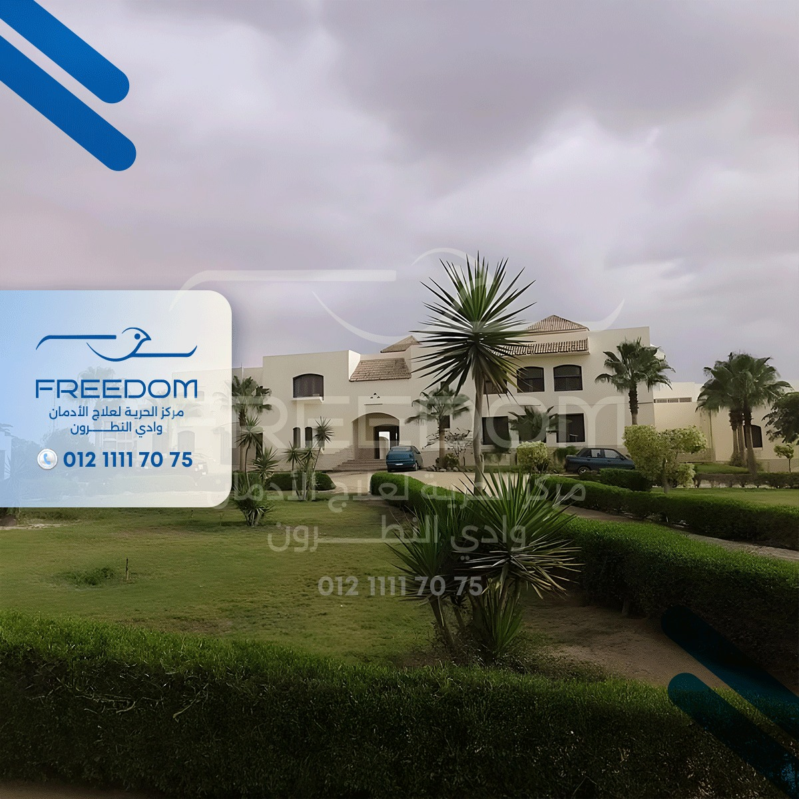
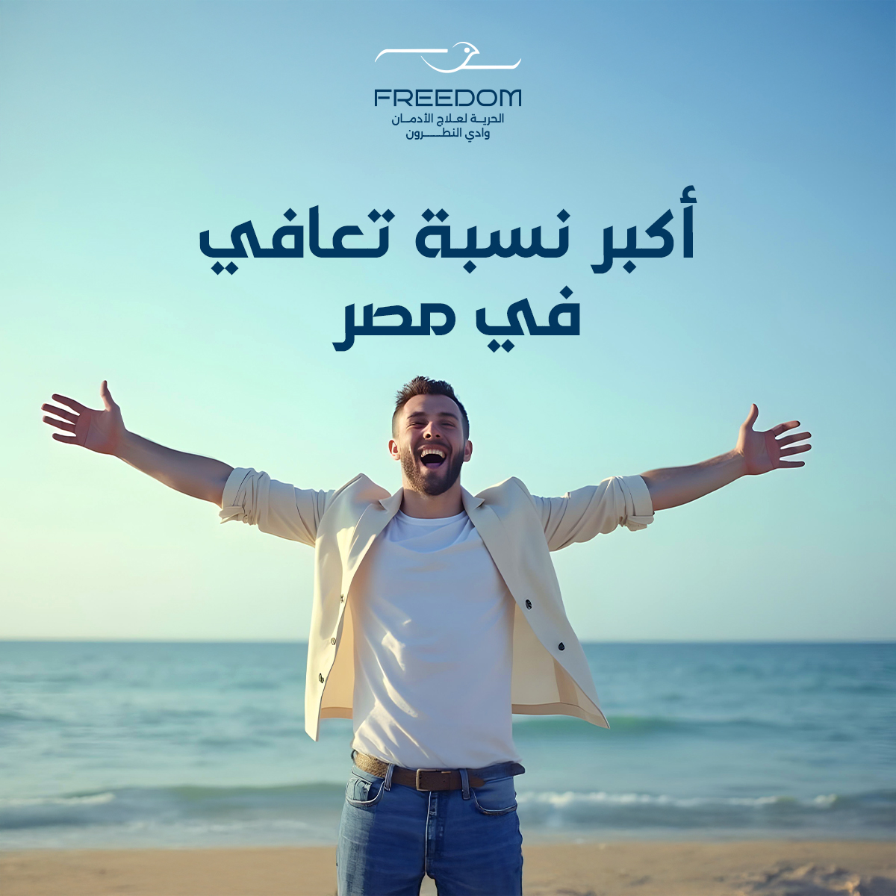
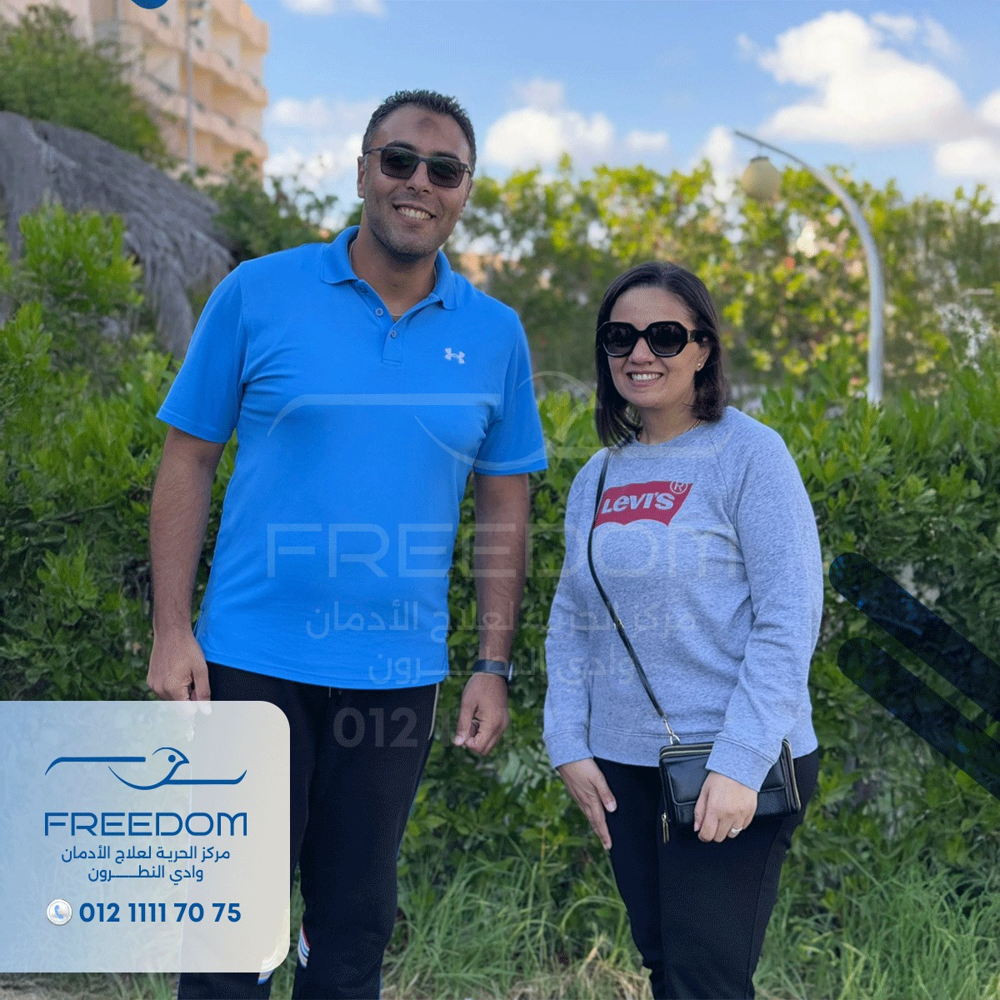
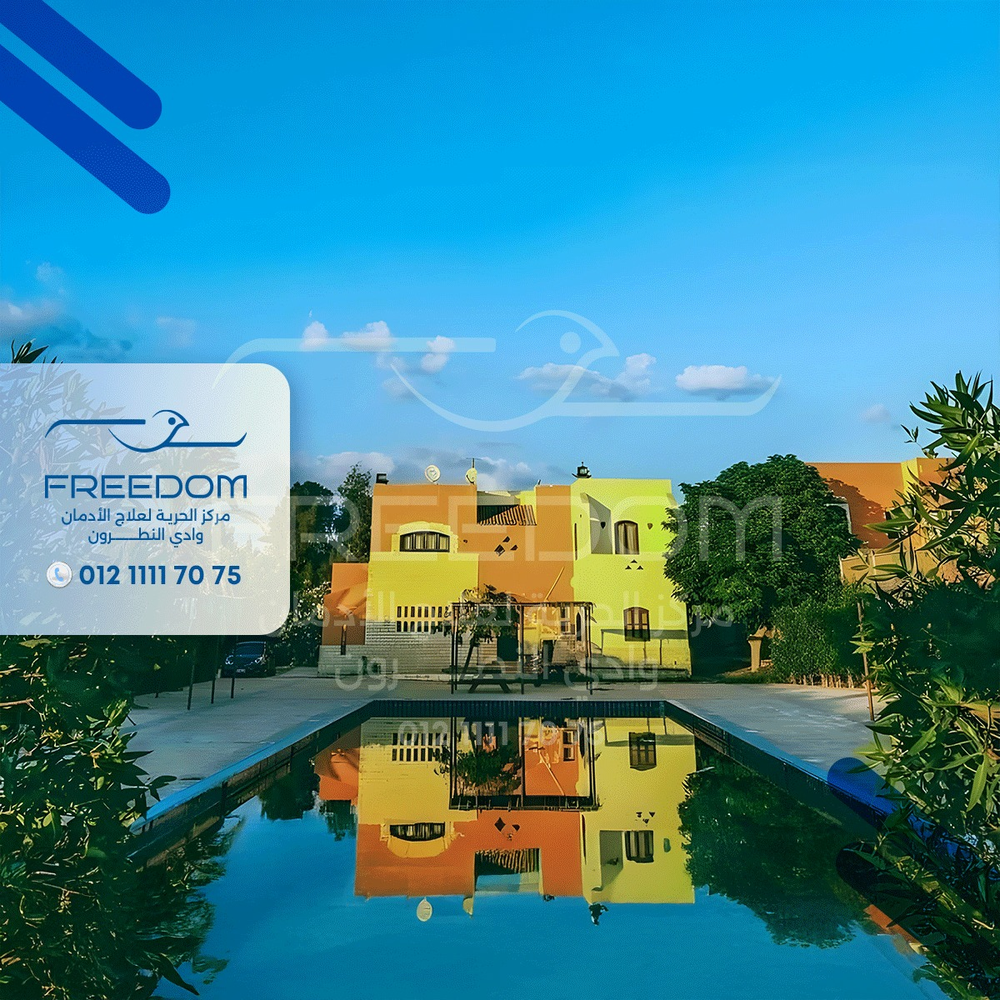

نمنحك الحياة من جديد — رعاية متكاملة وتأهيل نفسي في بيئة علاجية راقية وآمنة بوادي النطرون.


صُمم مبنى المركز والمساحات المحيطة به خصيصاً لتوفير أقصى درجات الهدوء والراحة النفسية التي يحتاجها النزيل خلال فترة التعافي. نحن نجمع بين العلاج الطبي المتقدم والتأهيل النفسي العميق.
تتم هذه المرحلة تحت إشراف طبي دقيق لتخفيف الأعراض الانسحابية وضمان مرورها بأمان وراحة تامة للمريض.
جلسات فردية وجماعية مكثفة تهدف إلى تغيير السلوكيات السلبية ومعالجة الأسباب الجذرية التي أدت للإدمان.
نوفر خططاً للرعاية اللاحقة والمتابعة المستمرة بعد الخروج لضمان اندماج المتعافي في المجتمع بقوة وثبات.
نوفر مساحات مجهزة لضمان بيئة علاجية وتأهيلية مثالية للنزلاء.



نؤمن بأن النشاط البدني والترفيه هما جزء لا يتجزأ من العلاج لتفريغ الطاقة السلبية وتجديد الروح.



في مركز الحرية أنت لست مريضاً، أنت أخ في عائلة كبيرة تدعمك خطوة بخطوة للوصول لبر الأمان.





فحص طبي ونفسي دقيق لتحديد البرنامج العلاجي الأنسب.
إزالة السموم بأمان تام باستخدام أحدث بروتوكولات الأدوية.
علاج الأسباب النفسية لضمان عدم العودة للإدمان.
متابعة دورية لضمان استمرارية التعافي في الحياة اليومية.
نحن هنا للاستماع إليك ومساعدتك. تواصل معنا بأي وقت وسيتم الرد عليك في سرية تامة ومطلقة.